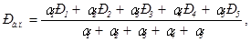
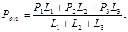
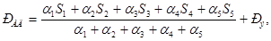

ПРАВИЛА ПРИЕМКИ РАБОТ
ПРИ СТРОИТЕЛЬСТВЕ И РЕМОНТЕ
АВТОМОБИЛЬНЫХ ДОРОГ
ВСН 19-89
МОСКВА «ТРАНСПОРТ» 1990
Правила разработаны взамен ВСН 19-81. В них учтены требования строительных норм и правил и других руководящих и нормативно-технических документов, вышедших в период 1981 - 1990 гг.
Содержат основные положения о порядке приемки выполненных работ при строительстве и ремонте автомобильных дорог, законченных ремонтом объектов, порядок проведения приемочного контроля качества работ, обязанности и права технического надзора, формы исполнительной производственно-технической документации и порядок их заполнения.
Предназначены для инженерно-технических работников, занятых на строительстве в ремонте автомобильных дорог общего пользования.
Правила разработаны Дорожным научно-исследовательским и производственно-технологическим объединением «Росдорнии» (канд. техн. наук Д.Г. Мепуришвили, инж. Л.А. Илюшина), Минавтодором РСФСР (инж. Г.Л. Чугаев, инж. Н.С. Медведев).
Табл. 1.
Ответственный за выпуск Н.С. Медведев
Заведующий редакцией Л.П. Топольницкая
Выпущены по заказу Министерства автомобильных дорог РСФСР.
|
Министерство
|
Ведомственные строительные нормы |
ВСН 19-89 |
|
Правила приемки работ при строительстве и ремонте автомобильных дорог |
Взамен ВСН 19-81 |
|
Внесены
|
Утверждены
|
Срок введения 01.01.91 г. |
1.1. Настоящие Правила устанавливают единый порядок приемки выполненных работ при строительстве (реконструкции)* и ремонте автомобильных дорог, законченных ремонтом объектов, а также организации технического надзора и оценки качества выполняемых работ строительными и ремонтно-строительными организациями.
* В дальнейшем по тексту под строительством понимается строительство и реконструкция.
1.2. Правила предусматривают:
порядок промежуточной приемки работ на стадии приемочного контроля при строительстве и ремонте автомобильных дорог, а также порядок приемки законченных ремонтом объектов;
порядок проведения технического надзора, приемочного контроля оценки качества выполненных работ и их соответствия нормативной документации и проекту;
порядок ведения исполнительной производственно-технической документации на объекты строительства и ремонта.
1.3. Приемка в эксплуатацию законченных строительством и реконструкцией автомобильных дорог производится в соответствии с требованиями СНиП 3.01.04-87 «Приемка в эксплуатацию законченных строительством объектов. Основные положения» и «Правил приемки в эксплуатацию законченных строительством автомобильных дорог», утвержденных Минтрансстроем СССР по согласованию с Госстроем СССР, Министерством внутренних дел СССР и ВЦСПС (приказ № 356 от 31.12.81).
1.4. Приемка в эксплуатацию законченных строительством объектов производственного жилищно-гражданского назначения производится в соответствии с требованиями СНиП 3.01.04-87.
1.5. Правовой и организационно-методической основой приемки работ и объектов являются:
Постановление ЦК КПСС и СМ СССР от 14.08.86 № 971;
Закон о государственном предприятии (объединении), статья 12;
СНиП 3.01.01-85 «Организация строительного производства»;
СНиП 3.01.04-87 «Приемка в эксплуатацию законченных строительством объектов. Основные положения»;
СНиП 3.06.03-85 «Автомобильные дороги»;
СНиП 3.02.01-87 «Земляные сооружения, основания и фундаменты»;
СНиП 3.01.03-84 «Геодезические работы в строительстве»;
Положение о заказчике (застройщике), дирекции строящегося предприятия и техническом надзоре, утвержденном постановлением Госстроя СССР от 02.02.88 № 16;
Правила приемки в эксплуатацию законченных строительством автомобильных дорог, утвержденные приказом Минтрансстроя СССР от 31.12.81 № 356;
Приказ Минавтодора РСФСР от 18.11.86 № 18 «О мерах по совершенствованию хозяйственного механизма в строительстве»;
Положение об отделе технического надзора, контроля качества и приемки работ, одобренное Советом по качеству Минавтодора РСФСР 28.04.88 (протокол № 48).
1.6. Технический надзор и производственный контроль в процессе строительно-монтажных и ремонтных работ осуществляются в целях:
обеспечения выполнения всех видов работ в полном соответствии проектно-сметной и нормативно-технической документации;
обеспечения соответствия применяемых материалов и изделий требованиям проекта, технических условий, стандартов и других нормативных документов;
проверки соответствия объемов выполненных работ по отдельным видам, а также по законченным строительством или ремонтом объектам требованиям проектно-сметной и исполнительной документации;
своевременного производства промежуточной приемки ответственных конструкций, освидетельствования скрытых работ и ведения исполнительной производственно-технической документации по ним в соответствии с установленными требованиями.
1.7. Выполненные строительно-монтажные работы, отдельные конструктивные элементы, а также законченные строительством (ремонтом) объекты или их участки оцениваются в целях выявления соответствия показателей качества работ, элементов и объектов требованиям проекта и установленных нормативными документами допусков к этим видам работ, элементам и объектам.
1.8. В случае несоответствия выполненных работ утвержденным проектным решениям и требованиям нормативных документов указанные работы должны быть переделаны выполнявшей их организацией.
Если подобные недостатки вскрываются работниками технического надзора или других контролирующих органов в процессе работы, то они должны давать производителям работ обязательные к исполнению письменные распоряжения о приостановке работ до устранения дефектов и немедленно сообщать об этом руководителям организации, выполняющей работы.
Осуществление технического надзора не снимает ответственности за качество выполненных работ с лиц, руководящих работами.
1.9. Организации, выполняющие работы подрядным и хозяйственным способами, обязаны своевременно составлять исполнительную производственно-техническую документацию, отражающую весь процесс строительства или ремонта автомобильной дороги, моста, путепровода и т.п., оформленную в соответствии с настоящими Правилами.
Исполнительная производственно-техническая документация, составляемая в процессе выполнения и сдачи работ, включает: исполнительные чертежи, общие журналы работ и авторского надзора; акты освидетельствования скрытых работ и промежуточной приемки ответственных конструкций; журналы лабораторного контроля, акты испытаний строительных материалов и контрольных образцов, паспорта и сертификаты на применяемые материалы и изделия и другие документы.
Надзор за соблюдением установленных требований к качеству работ, а также за полнотой и качеством исполнительной производственно-технической документации, своевременным составлением актов освидетельствования скрытых работ и промежуточной приемки ответственных конструкций входит в обязанности технического надзора, а также организации, исполняющей работы. Ответственность за организацию производственного контроля за качеством работ возлагается на главного инженера строительной (ремонтно-строительной) организации.
1.10. Правила распространяются на следующие виды приемки:
промежуточную приемку (или освидетельствование) скрытых работ, осуществляемую с целью проверки правильности выполнения отдельных работ или конструктивных элементов, которые будут частично или полностью скрыты при последующих работах;
промежуточную приемку ответственных конструкций;
приемку законченных ремонтом участков автомобильных дорог (комплексов, этапов) и сооружений на них.
2.1. Промежуточную приемку (или освидетельствование) скрытых работ проводят по мере окончания отдельных видов работ или конструктивных элементов, которые частично или полностью будут скрыты при последующих работах. До приемки скрытых работ запрещается выполнять последующие работы.
К наиболее ответственным относятся те конструктивные элементы, некачественное выполнение которых может привести к потере несущей способности конструкций или к непригодности сооружения для нормальной эксплуатации. Перечень наиболее ответственных конструкций определяется проектом на автомобильную дорогу или сооружение. Примерные перечни работ, подлежащих промежуточной приемке, представлены в приложении 4 настоящих Правил (раздел 2, п.п. 2.2, 2.3).
2.4. Освидетельствование скрытых работ после проверки правильности их выполнения в натуре и ознакомления с технической документацией, а также промежуточная приемка ответственных конструкций оформляются соответственно актом освидетельствования скрытых работ и актом промежуточной приемки ответственных конструкций (см. приложение 2) с обязательной оценкой соответствия выполненных работ требованиям СНиП 3.06.03-85 (приложение 2 и раздел 5 настоящих Правил).
2.5. Освидетельствование скрытых работ и составление актов в случаях, когда последующие работы предстоит начать после длительного перерыва, следует производить непосредственно перед производством последующих работ.
2.6. Затраты на вскрытие конструкций по требованию заказчика во всех случаях производятся за счет заказчика. Выявленные при вскрытии конструкций дефекты и брак, устраняет организация, выполнившая работы.
2.7. Акты освидетельствования скрытых работ и промежуточной приемки ответственных конструкций при строительстве и ремонте автомобильных дорог и сооружений на них составляются в трех экземплярах и после подписания хранятся: один экземпляр у организации-заказчика (в техническом надзоре), один экземпляр - в организации, выполнившей работы, один - в проектной организации.
3.1. Приемка выполненных работ по ремонту участков автомобильных дорог и сооружений на них осуществляется аналогично промежуточной приемке ответственных конструкций и освидетельствования скрытых работ с периодичностью не реже одного раза в месяц.
при приемке в эксплуатацию автомобильных дорог общесоюзного (республиканского) значения и сооружений на них сметной стоимостью 4 млн. руб. и выше - в установленном порядке;
до 4 млн. руб. - автомобильными дорогами и автодорами.
3.3. В состав приемочных комиссий по приемке участков автомобильных дорог, законченных комплексным (маршрутным) ремонтом, включаются представители: заказчика, эксплуатационной организации, подрядчика, финансирующего банка, Государственной автомобильной инспекции, проектных, автотранспортных и при необходимости - других организаций. Председателями приемочных комиссий при этом назначаются ответственные работники органов и организаций в соответствии с п. 3.2.
3.4. В состав приемочных комиссий по приемке участков автомобильных дорог, на которых выполнены отдельные виды ремонтных работ, включаются представители заказчика (председатель), эксплуатационной организации и подрядчика.
3.5. Приемка отремонтированного участка автомобильной дороги оформляется актом (приложение 1, форма А-1).
При приемке участка автомобильной дороги, на которой выполнены лишь отдельные виды ремонтных работ (например, - поверхностная обработка, ямочный ремонт и т.д.), приложения 1 и 3 к указанному акту не оформляются.
3.6. Акт приемки отремонтированного участка автомобильной дороги составляется в трех экземплярах, один из которых представляется в орган, назначивший комиссию, один передается и хранится у заказчика и один - в организации, выполнившей работы.
3.7. При приемке законченных ремонтом автомобильных дорог государственной приемочной комиссии представляются:
документы, поименованные в п. 2.9;
акты освидетельствования скрытых работ и промежуточных приемок ответственных конструкций и сооружений;
справка о соответствии вводимых мощностей, предусмотренных утвержденными сметами, фактической стоимости ремонта.
3.8. Акты приемки законченных ремонтом автомобильных дорог утверждаются в месячный срок со дня приемки органом, назначившим государственные приемочные комиссии в соответствии с п. 3.2 настоящих Правил.
3.9. Разрешается переносить на следующий год выполнение работ, которые к моменту приемки не могут быть выполнены по температурно-климатическим условиям. При этом на эти работы распространяется порядок, предусмотренный п. 20 Правил приемки в эксплуатацию законченных строительством автомобильных дорог, утвержденных Минтрансстроем СССР (см. п. 1.5 настоящих Правил).
4.1. На объектах строительства, реконструкции и ремонта автомобильных дорог технический надзор заказчика-застройщика осуществляют созданные группы технического надзора. Технический надзор организуется как в виде самостоятельных структурных подразделений, так и в составе хозяйственных организаций, как технический аппарат. Он не располагает правами и функциями заказчика-застройщика для заключения подрядных и других договоров, финансирования строительства, самостоятельного приобретения и оплаты материалов и оборудования, а также правами и обязанностями распорядителя кредитов. Технический надзор создается в пределах средств на его содержание, предусмотренных на эти цели в сводных сметных расчетах стоимости строительства и реконструкции объектов с уменьшением на 30 % лимита затрат, устанавливаемого на содержание заказчика-застройщика; при ремонте объектов - за счет средств основной деятельности организации.
4.2. Технический надзор осуществляется в течение всего периода строительства, реконструкции и ремонта объектов дорожного хозяйства.
4.3. Основными задачами технического надзора являются:
контроль за соблюдением проектных решений, сроков строительства и требований нормативных документов, в том числе качества строительно-монтажных работ, соответствия стоимости строительства, реконструкции и ремонта объектов утвержденным в установленном порядке проектам и сметам.
4.4. В соответствии с основными задачами технический надзор осуществляет следующие функции:
4.4.1. В области обеспечения проектно-сметной документацией:
участвует в проверке комплектности и качества проектно-сметной документации, принятой от проектных организаций, приемке закрепления в натуре осей трасс и сооружений, реперов и знаков геодезической сети;
контролирует соблюдение установленного порядка согласования изменений проектных решений в процессе строительства, своевременное и правильное внесение в отдельные комплекты чертежей изменений проекта и данных инструментальной съемки выполненных работ;
готовит предложения для проектных организаций по проведению авторского надзора за строительством и реконструкцией объектов дорожного хозяйства.
4.4.2. В области освоения строительных площадок:
участвует в приемке геодезической разбивочной основы для строительства;
участвует в приемке внутриплощадочных и внешнеплощадочных работ.
4.4.3. В области надзора за строительством и ремонтом осуществляет контроль и технический надзор за строительством, соответствием объема, стоимости и качества выполняемых работ проектам и сметным расчетам, строительным нормам и правилам на производство и приемку этих работ, а также обеспечивает осуществление проектными организациями авторского надзора.
4.4.4. В области приемки в эксплуатацию законченных строительством и ремонтом объектов:
представляет (совместно с подрядными организациями) необходимые документы государственной приемочной комиссии по законченным строительством и ремонтом объектам;
участвует в приемке вспомогательных объектов и работе государственной приемочной комиссии;
несет ответственность в соответствии с действующим законодательством за приемку в эксплуатацию объектов, построенных с нарушением требований нормативных документов и проектной документации;
4.5. В соответствии с основными задачами на работников, осуществляющих технический надзор, возлагается:
контроль соответствия выполняемых строительно-монтажных работ, применяемых конструкций, изделий, материалов и поставляемого оборудования проектным решениям, требованиям строительных норм и правил, стандартов, технических условий и других нормативных документов;
принятие своевременных мер и контроль за устранением выявленных дефектов в проектно-сметной документации, ее пересмотр (в случае необходимости) и недопущение необоснованного увеличения сметной стоимости строительства и ремонта;
проверка наличия документов, удостоверяющих качество используемых на строительстве конструкций, изделий и материалов (технических паспортов, сертификатов, результатов лабораторных испытаний и др.);
контроль за выполнением геодезических работ в процессе строительства и ремонта;
освидетельствование и оценка совместно с работниками строительно-монтажных (ремонтно-строительных) организаций выполненных работ и конструктивных элементов, скрываемых при производстве последующих работ, а также обеспечение требований по запрещению производства дальнейших работ до оформления актов на освидетельствование скрытых работ;
осуществление по мере готовности с участием представителей генподрядной и специализированной организаций, а также проектных организаций промежуточной приемки конструкций, зданий и сооружений;
участие в проверках, проводимых органами государственного надзора, строительного и ведомственного контроля выполняемых строительно-монтажных работ, качества применяемых материалов и изделий;
контроль за соответствием объемов и качества выполненных и предъявленных к оплате строительно-монтажных работ проектно-сметной документации;
контроль наличия и правильности ведения первичной исполнительной технической документации (исполнительных схем инструментальной съемки смонтированных конструкций, частей зданий, сооружений и инженерных коммуникаций, общих и специальных журналов работ) и внесение в нее изменений в связи с выявленными недостатками и дефектами при производстве строительно-монтажных работ;
контроль исполнения строительно-монтажными (ремонтно-строительными) организациями указаний и предписаний авторского надзора, органов государственного строительного и ведомственного контроля, а также требований технического надзора заказчика, относящихся к вопросам качества выполняемых строительно-монтажных работ, применяемых конструкций, изделий, материалов и оборудования, обеспечения своевременного устранения дефектов и недоделок, выявленных при приемке отдельных видов работ, конструктивных элементов зданий, сооружений и объектов в целом;
участие в проведении рабочими комиссиями (приемочными комиссиями) проверок качества отдельных конструкций и строительно-монтажных работ при их приемке;
участие в освидетельствовании объектов, зданий и сооружений, подлежащих консервации, и оформлении документации на консервацию или временное прекращение строительства предприятий, зданий и сооружений, а также в оценке технического состояния объектов при передаче их для продолжения работ.
5.1. Оценка качества строительно-монтажных и ремонтных работ производится в целях определения соответствия выполненных работ и законченных строительством и ремонтом объектов требованиям проектной документации, строительных норм и правил, стандартов и технических условий и учитывается при оплате труда и премировании отдельных работников, бригад и коллективов в целом.
5.2. Следует производить комплексную оценку качества следующих конструктивных элементов:
искусственных сооружений, земляного полотна, оснований и покрытий дорожных одежд, водоотводных сооружений и укрепительных работ;
строительно-монтажных работ по законченным строительством и ремонтом автомобильным дорогам или их отдельным участкам.
5.3. Оценку соответствия каждого параметра требованиям проекта и нормативных документов производят в соответствии с условиями, приведенными в таблице.
5.4. Обязательным условием для приемки отдельных видов работ является полное соответствие результатов измерений параметров, указанных в таблице, а также применяемых материалов и изделий требованиям проекта, нормативных документов и стандартов.
5.5. В случае если по согласованию с проектной организацией и заказчиком работы выполнены с отклонениями параметров, указанных в таблице, от требований технической документации, значение показателя Р для соответствующего вида работ устанавливается не выше 0,7 за каждый параметр.
5.6. Если при оценке степени соответствия параметров требованиям проекта и нормативных документов по какому-либо виду работ не выполнены указанные выше условия, эти работы подлежат их переделке (исправлению) и повторной приемке.
5.7. Оценка соответствия отдельных видов работ требованиям проекта и нормативных документов используется при оценке качества труда отдельных работников и бригад.
5.8. Комплексная оценка качества конструктивных элементов
5.8.1. Комплексный показатель качества устройства земляного полотна

где Р1, P2, Р3, P4, Р5 - оценки качества подготовки соответственно каждого параметра земляного полотна: вертикальной отметки продольного профиля, поперечного уклона, сужения между осью и бровкой, заложения откосов, плотности (коэффициента уплотнения);
a1, a2, a3, a4, a5 - коэффициенты значимости контролируемых параметров, принимаемые соответственно 0,9; 0,9; 1,0; 1,0; 1,0.
При этом комплексный показатель качества принимается не выше оценки качества по параметру «плотность».
Аналогично рассчитывается комплексный показатель качества по каждому промежуточному слою дорожной одежды.
5.8.2. Комплексный показатель качества устройства оснований и покрытий дорожных одежд, состоящий из отдельных участков, построенных в разное время или в разных местах:

где Р1, Р2, Р3 - оценки качества данного конструктивного элемента в соответствии с требованиями СНиП 3.06.03-85; рассчитываются по формуле (1);
L1, L2, L3 - протяженность принятых участков с соответствующими оценками.
Параметры, используемые при оценке качества работ, и условия их оценки
|
Конструктивный элемент, вид работ и контролируемый параметр |
Условия оценки качества работ |
||
|
Соответствует требованиям СНиП 3.06.03-85 с отклонениями по ГОСТ 15467-79, согласованными с проектными организациями и заказчиком; К = 0,7 |
Соответствует основным требованиям СНиП 3.06.03-85; К = 1,0 |
Соответствует перспективным (повышенным) требованиям СНиП 3.06.03-85; К = 1,25 |
|
|
1. Земляное полотно |
|||
|
1.1. Подготовка основания земляного полотна |
|||
|
1.1.1. Толщина снимаемого плодородного слоя грунта |
Допускается малозначительное отклонение пара метра, подлежащего оценке по данному виду работ по ГОСТ 15467-79, причем количество отклонений результатов определений от проектных значений не должно превышать 50 % |
Не более 10 % результатов определений могут иметь отклонения от проектных значений в пределах до ± 40 %, остальные - до ± 20 % |
Не более 5 % результатов определений могут иметь отклонения от проектных значений в пределах до ± 40 %, остальные - до ± 20 % |
|
1.1.2. Снижение плотности естественного основания |
То же |
Не более 10 % результатов определений могут иметь отклонения от проектных значений в пределах до 4 %, остальные должны быть не ниже проектных значений |
Не более 10 % результатов определений могут иметь отклонения от проектных значений в пределах до 2 %, остальные должны быть не ниже проектных значений |
|
1.2. Возведение насыпей и разработка выемок |
|||
|
1.2.1. Снижение плотности слоев земляного полотна* |
То же |
То же |
То же |
|
1.2.2. Высотные отметки продольного профиля |
« |
Не более 10 % результатов определений могут иметь отклонения от проектных значений в пределах до ± 100 (± 20) мм**, остальные - до ± 50 (± 10) мм |
Не более 5 % результатов определений могут иметь отклонения от проектных значений в пределах до ± 100 (± 20) мм, остальные - до ± 50 (± 10) мм |
|
1.2.3. Расстояние между осью и бровкой земляного полотна |
« |
Не более 10 % результатов определений могут иметь отклонения от проектных значений в пределах до ± 20 см, остальные - до ± 10 см |
Не более 5 % результатов определений могут иметь отклонения от проектных значений в пределах до ± 20 см, остальные - до ± 10 см |
|
1.2.4 Поперечные уклоны |
« |
Не более 10 % результатов определений могут иметь отклонения от проектных значений в пределах от -0,015 (-0,010) до +0,030 (+0,015) остальные - до ± 0,010 (± 0,005) |
Не более 5 % результатов определений могут иметь отклонения от проектных значений в пределах от -0,015 (-0,010) до +0,030 (+0,015), остальные - до ± 0,010 (± 0,005) |
|
1.2.5. Уменьшение откосов крутизны |
« |
Не более 10 % результатов определений могут иметь отклонения от проектных значений в пределах до 20 %, остальные - до 10 % |
Не более 5 % результатов определений могут иметь отклонения от проектных значений в пределах до 20 %, остальные - до 10 % |
|
1.3. Устройство водоотвода |
|||
|
1.3.1. Увеличение поперечных размеров кюветов, нагорных и других канав (по дну) |
Допускается малозначительное отклонение параметра, подлежащего оценке по данному виду работ по ГОСТ 15467-79, причем количество отклонений результатов определений от проектных значений не должно превышать 50 % |
Не более 10 % результатов определений могут иметь отклонения от проектных значений в пределах до 10 см, остальные - до 5 см |
Не более 5 % определений могут иметь отклонения от проектных значений в пределах до 10 см, остальные - до 5 см |
|
1.3.2. Глубина кюветов, нагорных и других канав (при условии обеспечения стока) |
То же |
То же |
То же |
|
1.3.3. Поперечные размеры дренажей |
« |
« |
« |
|
1.3.4. Продольные уклоны дренажей |
« |
Не более 10 % результатов определений могут иметь отклонения от проектных значений в пределах до ± 0,002, остальные - до ± 0,001 |
Не более 5 % определений могут иметь отклонения от проектных значений в пределах до ± 0,002, остальные - до ± 0,001 |
|
1.3.5. Ширина насыпных берм |
То же |
Не более 10 % результатов определений могут иметь отклонения от проектных значений в пределах до ± 30 см остальные - до ± 15 см |
Не более 5 % результатов определений могут иметь отклонения от проектных значений в пределах до ± 30 см, остальные - до ± 15 см |
|
1.4. Устройство присыпных обочин |
|||
|
1.4.1 Снижение плотности грунта в обочинах |
Допускается малозначительное отклонение параметра, подлежащего оценке по данному виду работ по ГОСТ 15467-79, причем количество отклонений результатов определений от проектных значений не должно превышать 50 % |
Не более 10 % результатов определений могут иметь отклонения от проектных значений в пределах до 4 %, остальные должны быть не ниже проектных значений |
Не более 10 % результатов определений могут иметь отклонения от проектных значений в пределах до 2 %, остальные должны быть не ниже проектных значений |
|
1.4.2. Толщина укрепления |
То же |
Не более 10 % результатов определений могут иметь отклонения от проектных значений в пределах от -22 до +30 мм, остальные - до ± 15 мм |
Не более 5 % результатов определений могут иметь отклонения от проектных значений в пределах от -22 до +30, остальные - до ± 15 мм |
|
1.4.3. Поперечные уклоны обочин |
Допускается малозначительное отклонение параметра, подлежащего оценке по данному виду работ по ГОСТ 15467-79, причем количество отклонений результатов определений от проектных значений не должно превышать 50 % |
Не более 10 % результатов определений могут иметь отклонения от проектных значений в пределах от -0,015 (-0,010) до +0,030 (+0,015), остальные - до ± 0,010 (± 0,005) |
Не более 5 % результатов определений могут иметь отклонения от проектных значений в пределах от -0,015 (-0,010) до +0,030 (+0,015), остальные - до ± 0,010 (± 0,005) |
|
2. Основания и покрытия дорожных одежд |
|||
|
2.1. Высотные отметки по оси |
Допускается малозначительное отклонение параметра, подлежащего оценке по данному виду работ по ГОСТ 15467-79, причем количество отклонений результатов определений от проектных значений не должно превышать 50 % |
Не более 10 % результатов определений могут иметь отклонения от проектных значений в пределах до ± 100 (± 20) мм, остальные - до ± 50 (± 10 мм) |
Не более 5 % результатов определений могут иметь отклонения от проектных значений в пределах до ± 100 (± 20) мм, остальные - до ± 50 (± 10) мм |
|
2.2. Ширина слоя |
|||
|
2.2.1. Цементобетонные основания и покрытия, мостовые |
То же |
Не более 10 % результатов определений могут иметь отклонения от проектных значений в пределах от -7,5 до +10 см, остальные - до ± 5 см |
Не более 5 % результатов определений могут иметь отклонения от проектных значений в пределах от -7,5 до +10 см, остальные - до ± 5 см |
|
2.2.2. Все остальные типы оснований и покрытий |
« |
Не более 10 % результатов определений могут иметь отклонения от проектных значений в пределах от -15 до +20 см, остальные - до ± 10 см |
Не более 5 % результатов определений могут иметь отклонения от проектных значений в пределах от -15 до +20 см, остальные - до ± 10 см |
|
2.3. Толщина слоя |
|||
|
2.3.1. Асфальтобетонные основания и покрытия |
« |
Не более 10 % результатов определений могут иметь отклонения от проектных значений в пределах от -10 до +20 мм, остальные - от -5 до +10 мм |
Не более 5 % результатов определений могут иметь отклонения от проектных значений в пределах от -10 до +20 мм, остальные - от -5 до +10 мм |
|
2.3.2. Все остальные типы оснований и покрытий |
« |
Не более 10 % результатов определений могут иметь отклонения от проектных значений в пределах от -20 (-15) до +30 (+20) мм, остальные до ± 15 (± 10) мм |
Не более 5 % результатов определений могут иметь отклонения от проектных значений в пределах от -20 (-15) до +30 (+20) мм, остальные до ± 15 (± 10) мм |
|
2.4. Поперечные уклоны |
« |
Не более 10 % результатов определений могут иметь отклонения от проектных значений в пределах от -0,015 (-0,010) до +0,030 (+0,015), остальные - до ± 0,010 (± 0,005) |
Не более 5 % результатов определений могут иметь отклонения от проектных значений в пределах от -0,015 (-0,010) до +0,030 (+0,015), остальные - до ± 0,010 (± 0,005) |
|
2.5. Ровность (просветы) под рейкой длиной 3 м |
|||
|
2.5.1. Основания и покрытия из крупнообломочных, песчаных и глинистых грунтов и отходов промышленности, укрепленных неорганическими и органическими вяжущими материалами: |
« |
||
|
для дорог I, II и III категорий |
« |
Не более 5 % результатов определений могут иметь значения просветов в пределах до 14 (10) мм, остальные - до 7 (5) мм |
Не более 2 % результатов определений могут иметь значения просветов в пределах до 14 (10) мм, остальные - до 7 (5) мм |
|
для дорог IV и V категорий |
Допускается малозначительное отклонение параметра, подлежащего оценке по данному виду работ по ГОСТ 15467-79, причем количество отклонений результатов определений от проектных значений не должно превышать 50 % |
Не более 5 % результатов определений могут иметь значения просветов в пределах до 20 мм, остальные - до 10 мм |
Не более 2 % результатов определений могут иметь значения просветов в пределах до 20 мм, остальные - до 10 мм |
|
2.5.2. Щебеночные, гравийные и шлаковые основания и покрытия из щебеночных, гравийных и песчаных материалов, обработанных неорганическими вяжущими материалами: |
|||
|
для дорог I, II и III категорий |
То же |
Не более 5 % результатов определений могут иметь значения просветов в пределах до 20 (10) мм, остальные - до 10 (5) мм |
Не более 2 % результатов определений могут иметь значения просветов в пределах до 20 (10) мм, остальные - до 10 (5) мм |
|
для дорог IV и V категорий |
« |
Не более 5 % результатов определений могут иметь значения просветов в пределах до 30 мм, остальные - до 15 мм |
Не более 2 % результатов определений могут иметь значения просветов в пределах до 30 мм, остальные - до 15 мм |
|
2.5.3. Основания и покрытия из дегтебетонных смесей, черного щебня и щебеночных смесей по способу пропитки органическими вяжущими и способом смешения на дороге |
|||
|
для дорог I, II и III категорий |
Допускается малозначительное отклонение параметра, подлежащего оценке по данному виду работ по ГОСТ 15467-79, причем количество отклонений результатов определений от проектных значений не должно превышать 50 % |
Не более 5 % результатов определений могут иметь значения просветов в пределах 14 (10) мм, остальные - до 7 (5) мм |
Не более 2 % результатов определений могут иметь значения просветов в пределах до 14 (10) мм, остальные - до 7 (5) мм |
|
для дорог IV и V категорий |
То же |
Не более 5 % результатов определений могут иметь значения просветов в пределах до 20 мм, остальные - до 10 мм |
Не более 2 % результатов определений могут иметь значения просветов в пределах до 20 мм, остальные - до 10 мм |
|
2.5.4. Асфальтобетонные и монолитные цементобетонные основания и покрытия |
« |
Не более 5 % результатов определений могут иметь значения просветов в пределах до 10 (6) мм, остальные - до 5 (3) мм |
Не более 2 % результатов определений могут иметь значения просветов в пределах до 10 (6) мм, остальные - до 5 (3) мм |
|
2.6. Разница в уровне поверхности в швах монолитных цементобетонных оснований и покрытий |
« |
Не более 20 % результатов определений могут иметь значения в пределах до 10 (7) мм остальные - до 3 (2) мм |
Не более 10 % результатов определений могут иметь значения в пределах до 10 (7), остальные - до 3 (2) мм |
|
2.7. Превышение граней смежных плит сборных цементобетонных покрытий: |
|||
|
для дорог I, II и III категорий |
Допускается малозначительное отклонение параметра, подлежащего оценке по данному виду работ по ГОСТ 15467-79, причем количество отклонений результатов определений от проектных значений не должно превышать 50 °/о |
Не более 20 % результатов определений могут иметь значения в пределах до 10 мм, остальные - до 5 мм |
Не более 10 % результатов определений могут иметь значения в пределах до 10 мм, остальные - до 5 мм |
|
для дорог IV и V категорий |
Не более 20 % результатов определений могут иметь значения в пределах до 14 мм, остальные - до 7 мм |
Не более 10 % результатов определений могут иметь значения в пределах до 14 мм, остальные - до 7 мм |
|
|
* При отсыпке земляного полотна из скальных (крупнообломочных) грунтов этот показатель для оценки качества не используется. ** Здесь и далее данные в скобках относятся к работам, выполняемым с применением машин с автоматической системой задания вертикальных отметок. |
|||
5.8.3. Комплексная оценка качества устройства конструктивных элементов может использоваться при оценке качества труда бригад и участков.
5.9. Оценка качества работ по законченному строительством (ремонтом) участку автомобильной дороги.
5.9.1. Для оценки качества ремонтно-строительных работ по законченному строительством (реконструкцией) или ремонтом участку автомобильной дороги рассчитывают комплексный показатель

где S1, S2, S3, S4, S5 - показатель качества устройства соответственно земляного полотна, искусственных сооружений, оснований, покрытий дорожных одежд, обстановки и принадлежностей дороги на сдаваемом участке;
Рэ - показатель эстетичности, значения которого могут приниматься от -0,05 до +0,1 в зависимости от качества отделочных и укрепительных работ и внешнего вида участка;
a1, a2, a3, a4, a5 - коэффициенты значимости; соответственно для земляного полотна a1 = 1,0; для искусственных сооружений a2 = 0,9; для оснований дорожных одежд a3 = 0,9; для покрытий дорожных одежд a4 = 1,0; для обстановки и принадлежности дороги a5 = 0,7.
5.9.2. Комплексный показатель РАД для законченного строительством (ремонтом) участка автомобильной дороги, рассчитанный по формуле (6), не должен превышать значений комплексных показателей качества земляного полотна и покрытия дорожных одежд.
Форма А-1
АКТ ПРИЕМКИ ЗАКОНЧЕННЫХ РАБОТ ПО РЕМОНТУ УЧАСТКА АВТОМОБИЛЬНОЙ ДОРОГИ________________________________________________________________________ (наименование участка, с какого по какой километр, значение, техническая ________________________________________________________________________ категория) Гор. _____________________________ «_____» ________________ 19 _____ г. Комиссия, действующая на основании ______________________________________ (указать № и дату приказа, распоряжения) в составе: председателя ____________________________________________________________ (должность, фамилия, и., о) членов _________________________________________________________________ (должности, фамилии, и, о.) ________________________________________________________________________ ________________________________________________________________________ произвела приемку работ, выполненных _____________________________________ (указать организацию, выполнявшую работы) в период с «_____» ___________ 19____ г. по «_____» ________ 19_____ г. по ремонту участка автомобильной дороги __________________________________ (наименование дороги, ________________________________________________________________________ технической категории) с ________ км по _____ км, находящейся на балансе ___________________________ ________________________________________________________________________ (наименование организации) Комиссии представлены и ею рассмотрены нижеследующие документы, относящиеся к производству работ по ремонту участка: ________________________________________________________________________ (перечислить проектно-сметную документацию с указанием, кем и когда ________________________________________________________________________ она утверждена, и документы, относящиеся к производству работ ________________________________________________________________________ и представленные комиссии при приемке работ) На основании рассмотрения предъявленной документации и осмотра участка в натуре, контрольных измерений и испытаний комиссия установила следующее: 1. В процессе ремонта имелись следующие отступления от утвержденного проекта (рабочих чертежей), технических правил по ремонту автомобильных дорог, согласованные с проектной организацией и заказчиком ________________________________________________________________________ (перечислить все выявленные отступления, указать, по какой причине ________________________________________________________________________ эти отступления произошли, с кем и когда согласованы) 2. Полная сметная стоимость ремонта (по утвержденной сметной документации) _________________________________ тыс. руб. 3. Фактическая стоимость ремонта __________________________ тыс. руб. 4. Заключение Работы по ремонту _______________________________________________________ (наименование участка дороги) выполнены в полном объеме (см. приложения) в соответствии с проектно-сметной документацией, строительными нормами и правилами, техническими правилами ремонта и содержания автомобильных дорог и отвечают требованиям правил приемки работ, утвержденных Минавтодором РСФСР. Решение приемочной комиссии Предъявленный к приемке отремонтированный участок ________________________ ___________________________________________________________________________ (наименование участка дороги и его протяжение, с какого по какой километр, ___________________________________________________________________________ значение и категория) принять в эксплуатацию. Установить общую оценку качества ремонта участка автомобильной дороги ______ ________________________________________________________________________ (в соответствии со СНиП 3.06.03-85) Акт составлен в ________ экземплярах, которые вручены или разосланы следующим организациям ___________________________________________________ __________________________________________________________________________ Передать на хранение рассмотренные комиссией документы ___________________ __________________________________________________________________________ (перечислите, какие, число экземпляров и организаций) Приложения к акту 1. Ведомость выполненных работ 2. Ведомость контрольных измерений и испытаний 3. Графическая схема дороги с указанием принятых работ Председатель комиссии __________________________________________________ (подпись, фамилия, и., о.) Члены комиссии ________________________________________________________ (подписи, фамилии, и., о.) Приложение 1 к форме А-1 Ведомость выполненных работ по ремонту участка автомобильной дороги __________________________________________________________________ (наименование участка, с какого по какой километр) в период с «____» ______________ 19 ___ г. по «___» ____________ 19 ____ г.
Итого: __________________________ тыс. руб. Заказчик: Руководитель организации ________________________________________________ (подпись, фамилия, и., о.) Подрядчик: Руководитель организации ________________________________________________ (подпись, фамилия, и., о.) «___» _________________ 19 ___ г. Примечание. В наименовании работ должны указываться размеры всех конструктивных элементов (основание, покрытие, уширение и т.д.). Приложение 2 к форме А-1 Ведомость контрольных измерений и испытаний,
произведенных __________________________________________________________________________ (наименование участка) с «_____» ___________ 19 _____ г. по «_____» ___________ 19 ______ г.
Председатель комиссии ___________________________________________________ (подпись, фамилия, и., о.) Члены комиссии _________________________________________________________ (подпись, фамилии, и., о.) «______» ___________________ 19______ г. Примечание. Перечень параметров, по которым проводятся измерения и испытания при приемке: Трубы 1. Качество очистки русла входного и выходного лотков. 2. Продольный уклон трубы. 3. Состояние оголовков и соответствие их проектным данным. 4. Состояние стыков железобетонных звеньев. Земляное полотно 1. Поперечные сечения водоотводных канав (глубина и ширина по низу, продольный уклон) - на всем протяжении в характерных точках. 2. Укрепительные работы откосов насыпей, конусов мостов, лотков водопропускных труб (площадь укрепления, толщина защитного слоя) - на каждом сооружении в полном объеме. 3. Заложение откосов земляного полотна - на 1 км земляного полотна 20 измерений (на каждом пикете «лево» и «право»). 4. Ширина обочин - на 1 км земляного полотна 20 измерений. 5. Ширина и толщина слоя укрепления обочин - на каждом пикете. 6. Коэффициент уплотнения - в 1,5 м от бровки каждые 200 м слева и справа. Основания и покрытия 1. Ширина - на 1 км 20 измерений (через каждые 100 м). 2. Толщина - объем тот же. 3. Поперечный уклон - объем тот же. 4. Ровность - на каждой захватке длиной 300 - 400 м 100 - 130 измерений. 5. Определение вертикальных отметок продольного профиля - через каждые 5 м и на плюсовых точках. 6. Плотность - 3 точки на 7000 м2 основания и покрытия. 7. Шероховатость покрытия - на каждой полосе движения по одной полосе наката на каждые 1000 м 3 - 5 измерений. Цементобетонные покрытия 1. Состояние деформационных швов - все швы. 2. Превышение граней смежных плит - через 100 м. 3. Равномерность нанесения пленки из кремнийорганических и других соединений - на всем участке. Приложение 3 к форме А-1 Графическая схема ремонтируемой дороги Дорога _________________________________________________________________ (наименование, значение, техническая категория) протяжением ___________ км отремонтирована на участке с _____________________ ____________________ км по _________ км в период с «_____» _________ 19 _____ г. по «_____» ___________________ 19 _____ г. (На схеме условными знаками и цветными карандашами указываются отремонтированные участки по настоящему акту с выделением земляного полотна, мостов, видов покрытия, зданий и сооружений дорожной службы на километрах всего объекта.) К настоящему акту приложено _____________________ шт. фотодокументов. Заказчик _______________________________________________________________ (подпись, фамилия, и., о.) Подрядчик _____________________________________________________________ (подпись, фамилия, и., о.) |
|||||||||||||||||||||||||||||||||||||||||||
Форма А-2
АКТ ОСВИДЕТЕЛЬСТВОВАНИЯ СКРЫТЫХ РАБОТ И
ПРОМЕЖУТОЧНОЙ
|
Приложение 1 к форме А-2
Ведомость приемки земляного полотна и корыта
|
Место измерения |
Отметка по оси |
Сужение между осью и бровкой, м |
Поперечные уклоны, % |
Коэффициент уплотнения |
Заложение откосов |
||||||||||
|
км |
пк + |
проектная |
фактическая |
проектное |
фактическое |
лево |
право |
лево |
ось |
право |
проектное |
фактическое |
Примечание |
||
|
лево |
право |
лево |
право |
||||||||||||
|
1 |
2 |
3 |
4 |
5 |
6 |
7 |
8 |
9 |
10 |
11 |
12 |
13 |
14 |
15 |
16 |
Председатель комиссии ____________________ _______________________
(подпись) (фамилия, и., о.)
Члены комиссии ____________________ _______________________
(подпись) (фамилия, и., о.)
Приложение 2 к форме А-2
Ведомость промеров толщины, степени уплотнения оснований
|
Место измерений |
Тип оснований |
Толщина основания, см |
Коэффициент уплотнения оснований |
примечание |
||||||||||||||
|
км |
пк |
+ |
из слоя песка |
из слоя щебня (материалов, обработанных вяжущими) |
из слоя песка |
из слоя щебня (материалов, обработанных вяжущими) |
||||||||||||
|
проектная |
фактическая |
проектная |
фактическая |
право |
ось |
лево |
право |
ось |
лево |
|||||||||
|
право |
ось |
лево |
право |
ось |
лево |
|||||||||||||
|
1 |
2 |
3 |
4 |
5 |
6 |
7 |
8 |
12 |
13 |
14 |
15 |
16 |
17 |
18 |
19 |
|||
Председатель комиссии ____________________ _______________________
(подпись) (фамилия, и., о.)
Члены комиссии ____________________ _______________________
(подпись) (фамилия, и., о.)
Приложение 3 к форме А-2
Ведомость промеров толщины, поперечных уклонов, ширины и ровности покрытий
|
Места измерений |
Тип покрытий |
Поперечные уклоны, % |
Ширина проезжей |
Толщина покрытий, см |
Количество промеров под 3-метровой рейкой в продольном направлении, шт. |
Отметка по оси (только для замыкающих слоев) |
Коэффициент уплотнения |
|
||||||||||||
|
км |
пк |
+ |
проектные |
фактические |
нижний слой |
верхний слой |
||||||||||||||
|
проектная |
фактическая |
проектный |
фактический |
|||||||||||||||||
|
право |
лево |
проектная |
фактическая |
проектная |
фактическая |
до 5 мм |
до 10 мм |
10 мм |
проектная |
фактическая |
|
|||||||||
|
1 |
2 |
3 |
4 |
5 |
6 |
7 |
8 |
9 |
10 |
11 |
12 |
13 |
14 |
15 |
16 |
17 |
18 |
19 |
20 |
|
|
||||||||||||||||||||
Председатель комиссии ____________________ _______________________
(подпись) (фамилия, и., о.)
Члены комиссии ____________________ _______________________
(подпись) (фамилия, и., о.)
Форма А-3
АКТ
|
|||||||||||||||||||||||||||||||||
|
№
|
Место измерения |
Ширина полосы отвода, м (постоянная и временная) |
Очистка полосы от парубочных остатков |
Соблюдение требований по снятию и складированию растительного грунта |
Обеспеченность построечного водоотвода |
|||
|
ПК |
+ |
|||||||
|
проектная |
фактическая |
|
||||||
|
1 |
2 |
3 |
4 |
5 |
6 |
7 |
8 |
|
|
||||||||
Заказчик ____________________ Подрядчик__________________
(фамилия, должность) (фамилия, должность)
Форма А-4
|
(наименование объединения, ___________________________ строительного (ремонтно-строительного) ___________________________ управления) ОБЩИЙ ЖУРНАЛ РАБОТпо строительству ________________________________________________________ (наименование объекта, _______________________________________________________________________ пускового комплекса) Содержание общего журнала работ Указания о порядке заполнения общего журнала работРаздел 11.1. Титульный лист 1.2. Основные показатели строящегося объекта 1.3. Субподрядные организации и выполняемые ими виды работ 1.4. Организации, разработавшие проектно-сметную документацию 1.5. Изменения, вносимые в проектно-сметную документацию 1.6. Изменения, вносимые в состав пускового комплекса 1.7. Отметка об изменениях в записях на титульном листе 2.1. Список инженерно-технического персонала, занятого на строительстве объекта 2.2. Примерный перечень работ, подлежащих освидетельствованию (скрытые работы) 2.3. Примерный перечень ответственных конструкций, подлежащих промежуточной приемке 2.4. Регистрация актов скрытых работ и промежуточной приемки ответственных конструкций 3.1. Ежедневные сведения о выполнении дорожно-строительных (мостовых) работ 3.2. Особые отметки Указания 1. Общий журнал работ является основным первичным производственным документом, отражающим последовательность, сроки и условия выполнения дорожно-строительных (мостовых) работ. При ведении Общего журнала работ допускается не заполнять специальные журналы работ: укладки материалов, конструкций, изделий; бетонирования стыков; сварочных работ; клепальных работ; постановки высокопрочных болтов; очистки элементов стальных мостовых конструкций с соединениями на высокопрочных болтах; антикоррозионной защиты сварных соединений и др. 2. Общий журнал работ ведется на строительстве (реконструкции) самостоятельного пускового комплекса. В журнал заносятся сведения о всех производимых на объекте работах, в том числе выполняемых субподрядными организациями. Специализированные организации ведут специальные разделы общего журнала работ. 3. Титульный лист Общего журнала работ заполняется до начала строительства генеральной подрядной организацией с участием заказчика и проектной организации. В разделе 1 регистрируются все изменения, вносимые в проектно-сметную документацию в период строительства объекта с указанием органа, внесшего изменения, должности и фамилии лица, утвердившего изменения. В соответствии с п. 21 Правил приемки в эксплуатацию законченных строительством объектов, утвержденных Минтрансстроем СССР, в этом же разделе регистрируются изменения, вносимые в состав пускового комплекса. 4. В разделе 2 приводятся также два перечня работ, подлежащих освидетельствованию на стадии промежуточной приемки с составлением: акта скрытых работ (по перечню № 1) и акта промежуточной приемки ответственных конструкций (по перечню № 2). Оба перечня согласовываются с заказчиком и проектной организацией. 5. Общий журнал работ ведет старший производитель работ (начальник участка) и заполняет ежесменно с первого дня работы на объекте. По поручению старшего прораба и под его контролем записи в журнале могут вести начальники смен. 6. При передаче объекта другой строительной организации или замене на объекте одного производителя работ другим Общий журнал работ передается по приемо-сдаточному акту с соответствующей записью в самом журнале. 7. По мере оформления актов промежуточной приемки (актов скрытых работ и ответственных конструкций) производят их регистрацию в разделе 2 журнала с получением разрешения от заказчика на дальнейшее производство работ. 8. В разделе 3 журнала запись о производстве выполненных работ является его основной частью, которая содержит ежесменные сведения о начале каждого вида работ и подробно отражает весь ход его выполнения. Описание работ должно производиться по всем конструктивным элементам по мере их выполнения со ссылкой на номера рабочих чертежей и другой документации, по применяемым конструкциям и материалам со ссылкой на номера специальных журналов, характеризующих их качество, а также на данные по метеорологическим условиям. 9. В разделе «Особые отметки» Общего журнала работ указывается время аварий или несчастных случаев, дается краткое их описание, указывается время составления актов на аварии или несчастные случаи, имевшие место на объекте. 10. Замечания представителей технического надзора, заказчика, авторского надзора, руководителей подрядных организаций по качеству выполняемых работ и применяемых материалов заносятся в раздел 3 «Записи производства выполненных работ». 11. После исправления замечаний контролирующих лиц должна быть сделана запись о принятых мерах. 12. Общий журнал работ является одним из основных исполнительных документов, предъявляемых заказчиком Государственной приемочной комиссии при сдаче пускового комплекса (объекта) в эксплуатацию, и подлежит последующей передаче вместе с другой исполнительной документацией эксплуатационной организации. 13. Общий журнал работ, пронумерованный, прошнурованный и скрепленный печатями подрядчика, хранится непосредственно на объекте и должен предъявляться по первому требованию контролирующих лиц. Раздел 1 ТИТУЛЬНЫЙ ЛИСТ 1.1 ___________________________________________________________________ (наименование объекта, пускового комплекса) ______________________________________________________________________ ______________________________________________________________________ ______________________________________________________________________ (должность, ф., и., о. и подпись лица, ответственного за строительство объекта) ______________________________________________________________________ и ведение журнала) ______________________________________________________________________ Проектная организация _________________________________________________ ______________________________________________________________________ (ф., и., о. главного инженера проекта и его подпись) Заказчик-организация __________________________________________________ ______________________________________________________________________ (должность, ф., и., о и подпись руководителя технического надзора) Начало работ Окончание работ __________________ __________________ [по плану (договору)] __________________ (фактическое) В ЖУРНАЛЕ ПРОНУМЕРОВАННЫХ И ПРОШНУРОВАННЫХ СТРАНИЦ
1.2. Основные показатели строящегося объекта ______________________________________________________________________ (мощность (км), сметная стоимость и т.п.) ______________________________________________________________________ Сметная стоимость (полная) _____________________________________________ в том числе СМР _______________________________________________________ ______________________________________________________________________ (утверждающая инстанция и дата утверждения проекта) 1.3. Субподрядные организации и выполняемые ими виды работ ______________________________________________________________________ ______________________________________________________________________ (переустройство ЛЭП) ______________________________________________________________________ (переустройство газопровода) и т.п. 1.4. Проектная организация, разработавшая проект, _________________________ 1.5. Изменения, вносимые в проектно-сметную документацию, _______________ ______________________________________________________________________ (вид работ, деталь, конструктивный элемент, протокол рассмотрения ______________________________________________________________________ от №, ф., и., о. лица, утвердившего внесенные ______________________________________________________________________ изменения) 1.6. Изменения, внесенные в состав пускового комплекса ____________________ ______________________________________________________________________ (основание, кем внесены изменения, протокол рассмотрения (дата), ______________________________________________________________________ кем утверждены изменения) 1.7. Отметка об изменениях в записях на титульном листе __________________ 2.1. Список инженерно-технического персонала, занятого на строительстве объекта (главный инженер ДСУ, старший прораб, прорабы, мастера генподрядной и субподрядной организаций, начальник отдела контроля качества автодора, инженеры по технадзору, представитель проектной организации)
2.2. Промежуточная приемка Перечень (№ 1) работ, подлежащих освидетельствованию с составлением акта: ______________________________________________________________________ ______________________________________________________________________ ______________________________________________________________________ ______________________________________________________________________ ______________________________________________________________________ 2.3. Перечень (№ 2) ответственных конструкций, подлежащих промежуточной приемке: ______________________________________________________________________ ______________________________________________________________________ ______________________________________________________________________ ______________________________________________________________________ ______________________________________________________________________ 2.4. Регистрация актов скрытых работ и промежуточной приемки ответственных конструкций
|
|||||||||||||||||||||||||
Раздел 3
|
Дата, смена, состояние погоды, температура воздуха |
Описание выполненных работ с указанием применяемых материалов, конструкций, изделий, осей, рабочих отметок со ссылкой на номер рабочих чертежей и другую документацию |
Объем работ, количество (шт., м2, м3 и т.д.) |
Работы выполнены в соответствии с проектом и нормативными требованиями (указать гл. СНиП, ГОСТа, ВСН и т.д.). Подписи производителей работ (мастеров) |
Замечания по качеству выполненных работ, срок устранения. Должность, ф., и., о. и подпись |
Отметка об исполнении замечаний. Подпись лица, ответственного за строительство объекта, дата |
Отметка о приемке работ после устранения замечаний. Ф., и., о. и подпись представителя заказчика |
|
|
авторского и технического надзора |
представителя Министерства или другого вышестоящего органа |
||||||
|
1 |
2 |
3 |
4 |
5 |
6 |
7 |
8 |
3.2. Особые отметки
Заносятся время и описание аварий или несчастных случаев, происшедших на объекте, с указанием даты составления акта.
1. Общая часть
1.1. Строительная организация обязана своевременно и правильно оформлять производственно-техническую документацию, отражающую весь процесс производства работ по строительству дорог и отдельных сооружений, по приведенным ниже формам. Каждая форма должна сопровождаться краткой аннотацией по ее выдаче, заполнению, порядку передачи и т.п.
1.2. Общие требования к ведению исполнительной производственно-технической документации:
четкость построения и логическая последовательность изложения материала;
краткость и точность формулировок, исключающие возможность субъективного и неоднозначного толкования;
конкретность изложения результатов работы;
полное соблюдение и выполнение указаний настоящего порядка ведения исполнительной производственно-технической документации.
1.3. Типовыми формами исполнительной производственно-технической документации строительные организации обеспечиваются автодорами, автомобильными дорогами, автодорстройтрестами.
2. Исполнительная производственно-техническая документация.
2.1. Перечни и формы основной исполнительной производственно-технической документации установлены типовыми положениями Минавтодора РСФСР по организации лабораторной и геодезической служб (см. письмо Минавтодора РСФСР от 31.01.89 № ГД-18/102 и приказ Минавтодора РСФСР от 20.02.89 № 18-ор).
2.2. Исполнительные чертежи законченных строительством конструктивных элементов составляются либо в виде отдельного чертежа, либо используются рабочие чертежи с нанесением на них фактических размеров конструкций.
2.3. Исполнительные чертежи подписывает главный инженер подрядной организации с указанием даты.
2.4. Исполнительные чертежи составляются на следующие элементы автомобильной дороги:
законченные участки земляного полотна с указанием вертикальных отметок продольного профиля на каждом пикете и в местах, где осуществлена проектная привязка поперечных профилей земляного полотна, а также расстояния (сужения) между осью и бровкой, поперечных уклонов и заложения откосов;
законченные строительством водопропускные трубы, скотопрогоны и подпорные стенки с указанием планового и высотного положения, типа или марки примененных конструкций, изделий, полуфабрикатов и материалов, основных геометрических размеров искусственного сооружения;
законченную дорожную одежду с указанием вертикальной отметки верха дорожной одежды по оси попикетно, ширины, толщины поперечных уклонов и ровности (в том же объеме - попикетно);
опоры мостов с указанием их планового высотного положения, основных размеров, характеристик примененных конструкций, изделий, полуфабрикатов и материалов;
законченные строительством мосты с указанием основных геометрических размеров и качественных характеристик примененных конструкций, материалов и изделий.
2.5. Исполнительные чертежи составляются в одном экземпляре и хранятся в подрядной организации, а по окончании строительства объекта передаются рабочей комиссии.
2.6. Исполнительные чертежи составляются до осуществления приемочного контроля соответствующих конструктивных элементов автомобильной дороги или ее участков.
2.7. Общий журнал работ (форма приведена в приложении № 4).
2.8. Специальные журналы по отдельным видам работ:
журнал бойки свай, журнал укладки материалов, конструкций, деталей;
журнал авторского надзора (форма приведена в СНиП 1.06.05-85).
1. Геодезические и разбивочные работы:
1.1. Восстановление и закрепление трассы.
1.2. Создание геодезической разбивочной основы (ГРО).
1.3. Разбивка и закрепление в плане и профиле осей сооружений.
2. Земляные работы:
2.1. Снятие мохового, дернового слоя, выторфовывание, корчевка пней и удаление кустарника.
2.2. Нарезка уступов на косогорах.
2.3. Замена грунтов в основании земляного полотна.
2.4. Возведение земляного полотна (законченные участки).
3. Дорожная одежда:
3.1. Конструктивные слои оснований и покрытий.
3.2. Установка рельс-форм или копирных струн.
4. Малые искусственные сооружения (трубы):
4.1. Рытье котлованов.
4.2. Укладка щебеночной (песчаной) подготовки.
4.3. Монтаж сборного или бетонирование монолитного фундамента.
4.4. Монтаж звеньев трубы и оголовков, заделка стыков с промазкой швов цементным раствором.
4.5. Гидроизоляция тела трубы и оголовков.
4.6. Засыпка трубы.
4.7. Укрепительные работы у труб.
4.8. Строительство водоотводов, дренажей, водобойных колодцев.
5. Мосты:
5.1. Сварочные работы при монтаже сборных железобетонных конструкций
5.2. Монтаж сборных конструкций, их участков, секций (до окончательного закрепления элементов)
5.3. Устройство гидроизоляции деформационных швов
5.4. Устройство гидроизоляции конструкций
5.5. Укладка защитного слоя, уложенного на гидроизоляции.
1. Сооружение насыпи на слабом основании
2. Возведение свайных оснований
3. Земляное полотно на переувлажненных или заторфованных, или оттаивающих мерзлых грунтах
4. Сооружение насыпи больше 12,0 м
5. Разработка выемок в скальных грунтах и сооружение насыпей из крупнообломочных грунтов
6. Строительство сложных дренажных систем
7. Установка элементов швов расширения и коробления
8. Устройство противооползневых сооружений
9. Устройство противолавинных галерей
10. Устройство подпорных стен
11. Укладка бетона при подводном бетонировании
12. Укладка бетона в опоры мостов с помощью вертикально перемещающихся труб
13. Установка тангенциальных опорных частей
14. Установка напрягаемой арматуры
15. Монтаж сборных железобетонных элементов коробчатого сечения
16. Инъектирование каналов в предварительно напряженных мостовых конструкциях
17. Окраска металлических пролетных строений мостов
18. Установка высокопрочных болтов
СОДЕРЖАНИЕ